Capítulo 6 Gráficos con ggplot2
Visualizar datos es útil para identificar a relación entre distintas variables pero también para comunicar el análisis de los datos y resultados.
El paquete ggplot2 permite generar gráficos de gran calidad en pocos pasos.
Cualquier gráfico de ggplot tendrá como mínimo 3 componentes: los datos, un sistema de coordenadas y una geometría (la representación visual de los datos) y se irá construyendo por capas.
Capítulo 6 Gráficos con ggplot2
Visualizar datos es útil para identificar a relación entre distintas variables pero también para comunicar el análisis de los datos y resultados. El paquete ggplot2 permite generar gráficos de gran calidad en pocos pasos. Cualquier gráfico de ggplot tendrá como mínimo 3 componentes: los datos, un sistema de coordenadas y una geometría (la representación visual de los datos) y se irá construyendo por capas.
<<<<<<< Updated upstream6.1 Primera capa: el área del gráfico
Cómo siempre, primero hay que cargar los paquetes y los datos.
library(readr)
library(ggplot2)
library(dplyr)
library(tidyr)
library(stringr)
parques <- readr::read_csv("http://datos.yvera.gob.ar/dataset/458bcbe1-855c-4bc3-a1c9-cd4e84fedbbc/resource/78aea6ed-761c-4659-bdf2-7fcb0f616fad/download/serie-tiempo-parques-nacionales-mensual.csv")
parques <- parques %>%
pivot_longer(cols = -c("indice_tiempo", "residentes", "no_residentes", "total"),
names_to = "region") %>%
mutate(region = str_replace(region, "buenos_aires*", "buenos-aires"),
region = str_replace(region, "no_residentes", "noresidentes")) %>%
separate(region, into = c("region", "tipo_visitante"), sep = "_") %>%
select(-c("residentes", "no_residentes", "total")) %>%
pivot_wider(names_from = tipo_visitante, values_from = value, names_repair = "unique") %>%
mutate(indice_tiempo = lubridate::ym(indice_tiempo))La función principal de ggplot2 es justamente ggplot() que permite iniciar el gráfico y además definir las características globales.
El primer argumento de esta función serán los datos que vas a visualizar, siempre en un data frame.
En este caso usamos parques.
El segundo argumento se llama “mapping” (mapeo en inglés).
Este argumento define la relación entre cada columna del data frame y los distintos parámetros gráficos. Por ejemplo, qué columna va a representar el eje x, cuál va a ser el eje y, etc..
Este mapeo se hace siempre con la función aes() (que viene de aesthetics).
Por ejemplo, si querés hacer un gráfico que muestre la relación entre la cantidad de visitantes residentes y no residentes usarías algo como esto:
ggplot(data = parques, mapping = aes(x = noresidentes, y = residentes))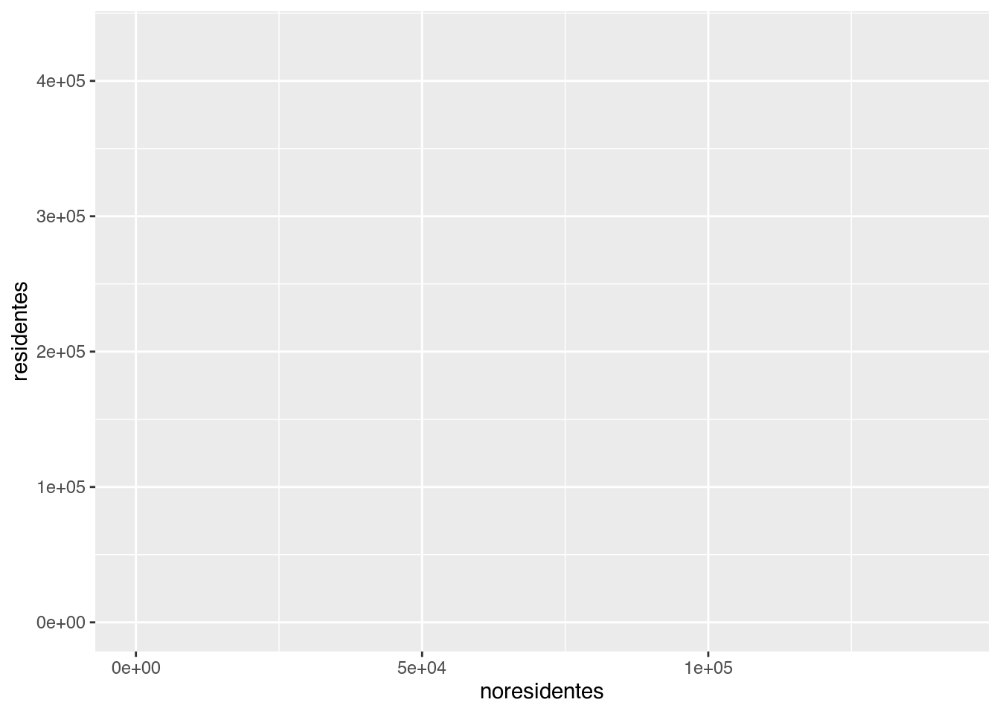
Este código le indica a ggplot que genere un gráfico donde el eje x se mapea a la columna noresidentes y el eje y, a la columna residentes.
Pero, como se ve, el esto sólo genera el área del gráfico y los ejes.
Lo que falta es indicar con qué geometrías representar los datos.
6.2 Segunda capa: geometrías
Para agregar geometrías que representen los datos lo que hay que hacer es sumar el resultado de una función que devuelva una capa de geometrías.
Estas suelen ser funciones que empiezan con “geom_” y luego el nombre de la geometría (en inglés).
Para representar los datos usando puntos, hay que uasr geom_point()
ggplot(data = parques, mapping = aes(x = noresidentes, y = residentes)) +
geom_point()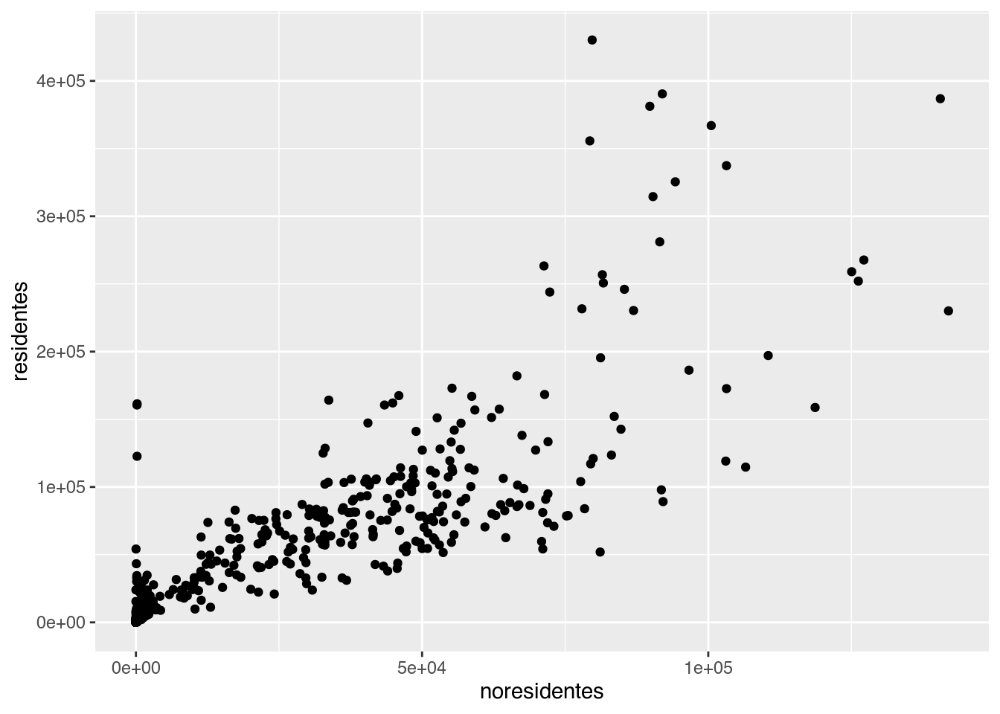
¡Tu primer gráfico!
Primer desafío
Ahora es tu turno. Modifica el gráfico anterior para visualizar cómo cambia la cantidad de visitantes residentes a lo largo de los años.
¿Te parece útil este gráfico?
Este gráfico tiene un punto por cada región y cada trimestre, pero es posible identificar a qué región corresponde cada punto. Es necesario agregar información al gráfico.
ggplot(data = parques, mapping = aes(x = indice_tiempo, y = residentes)) +
geom_point()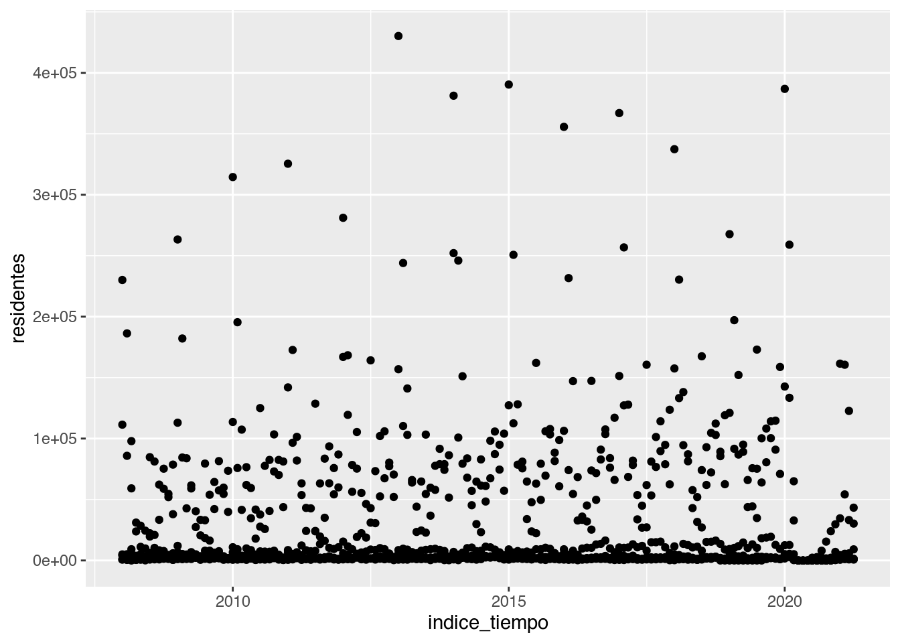
6.3 Mapear variables a elementos
Una posible solución sería utilizar otras variables de los datos, por ejemplo region y mapear el color de los puntos de a cuerdo a la región a la que pertenecen.
ggplot(data = parques, mapping = aes(x = indice_tiempo, y = residentes)) +
geom_point(aes(color = region))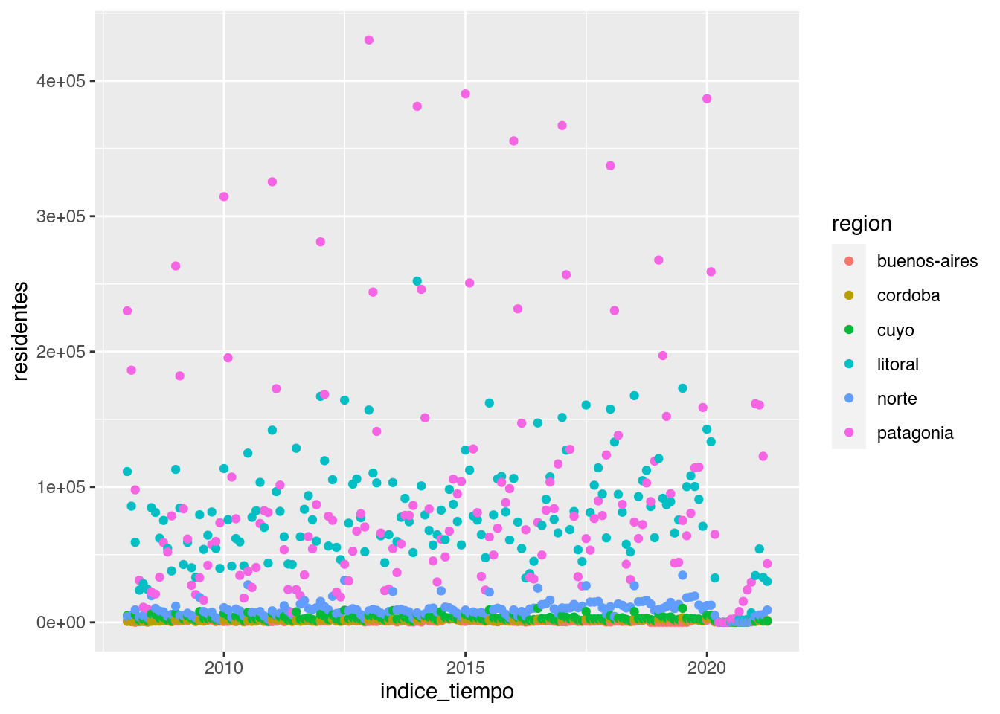
Ahh, ahora está un poco mejor. Se puede ver que la Patagonia (los puntos fucsia) tiene más visitantes que el resto de las regiones. Le sigue la región del Litoral (puntos turquesa).
Algo muy importante a tener en cuenta: los puntos toman un color de acuerdo a una variable de los datos, y para que ggplot2 identifique esa variable (en este caso region) es necesario incluirla dentro de una función aes().
6.4 Otras geometrías
Este gráfico posiblemente no sea muy adecuado si queremos visualizar la evolución de una variable a lo largo del tiempo.
Si bien se pueden identificar a qué región correponde cada punto, es muy difícil seguir la evolución de uno en particular; especialmente en la Patagonia, donde hay mucha distancia vertical entre los puntos.
Lo más natural es cambiar la geometría a lineas usando geom_line()
ggplot(data = parques, mapping = aes(x = indice_tiempo, y = residentes)) +
geom_line(aes(color = region))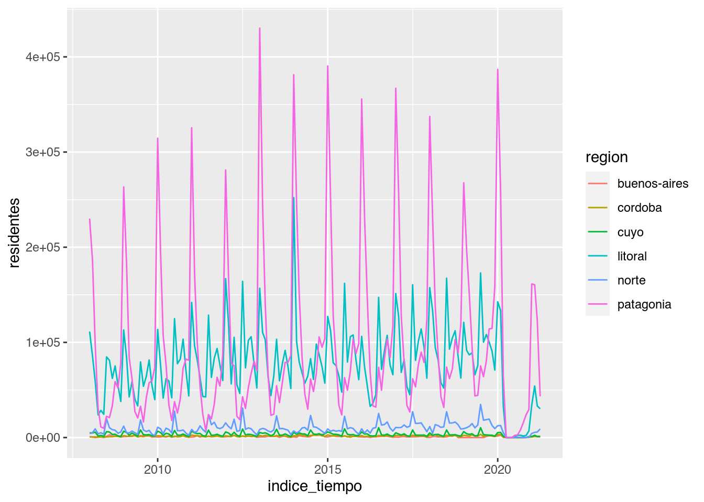
Por suerte las funciones geom_*() tienen más o menos nombres amigables.
Y ahora si, conseguimos el gráfico que estamos buscando. Las líneas unen puntos consecutivos y permiten que el ojo siga la evolución de cada región. La diferencia entre temporada alta y temporada baja en Patagonia (la estacionalidad) salta inmediatamente.
Segundo desafío
Hasta ahora tenemos dos capas: el área del gráfico y una única geometría (las líneas).
- Sumá una tercera capa para visualizar puntos además de las líneas.
- ¿Porqué los puntos ahora no siguen los colores de las regiones?
- ¿Qué cambio podrías hacer para que los puntos también tengan color según la región?
Acá surge una característica importante de las capas: pueden tener apariencia independiente si solo mapeamos el color en la capa de las líneas y no en la capa de los puntos.
Al mismo tiempo, si quisiéramos que todas las capas tenga la misma apariencia podemos incluir el argumento color =en la función global ggpplot() o repetirlo en cada capa.
Es la diferencia entre esto
ggplot(parques, aes(indice_tiempo, residentes)) +
geom_line(aes(color = region)) +
geom_point()
y esto.
ggplot(parques, aes(indice_tiempo, residentes, color = region)) +
geom_line() +
geom_point()
Si te preguntás a donde fueron a parar el data =, el mapping = y los nombres de los argumentos adentro de la función aes(), x = e y =, resulta que estamos aprovechando que tanto ggplot2 como nosotros ahora sabemos en que orden recibe la información cada función.
Siempre el primer elemento que le pases o indiquemos a la función ggplot() será el data frame y el segundo será el aes().
Algunos argumentos para cambiar la apariencia de las geometrías son:
colorocolourmodifica el color de líneas y puntosfillmodifica el color interno de un elemento, por ejemplo el relleno de una barralinetypemodifica el tipo de línea (punteada, continua, con guiones, etc…)sizemodifica el tamaño de los elementos (por ejemplo el tamaño de puntos o el grosor de líneas)alphamodifica la transparencia de los elementos (1 = opaco, 0 = transparente)shapemodifica el tipo de punto (círculos, cuadrados, triángulos, etc.)
El mapeo entre una variable y un parámetro de geometría se hace a través de una escala.
La escala de colores es lo que define, por ejemplo, que los puntos donde la variable region toma el valor "patagonia" van a tener el color rosa (●), donde toma el valor córdoba", mostaza (●), etc…
Modificar elementos utilizando un valor único
Es posible que en algún momento necesites cambiar la apariencia de los elementos o geometrías independientemente de las variables de tu data frame.
Por ejemplo podrías querer que todos los puntos sean de un único color: rojos.
En este caso geom_point(aes(color = "red")) no va a funcionar -ojo que los colores van en inglés-.
Lo que ese código hace es mapear el parámetro geométrico “color” a una variable que contiene el valor "red" para todas las filas.
El mapeo se hace a través de la escala, que va a asignarle un valor (rosa ●) a los puntos correspondientes al valor "red".
Como en este caso no te interesa mapear el color a una variable, tenés que mover ese argumento afuera de la función aes(): geom_point(color = "red").
6.5 Relación entre variables
Muchas veces no es suficiente con mirar los datos crudos para identificar la relación entre las variables; es necesario usar alguna transformación estadística que resalte esas relaciones, ya sea ajustando una recta o calculando promedios.
Para alguna transformaciones estadísticas comunes, ggplot2 tiene geoms ya programados, pero muchas veces es posible que necesites manipular los datos antes de poder hacer un gráfico. A veces esa manipulación será compleja y su resultado luego va a ser utilizado en otras partes del análisis. En esos casos, te conviene guardar los datos modificados en una nueva variable. Pero para transformaciones más simples podés encadenar la manipulación de los datos directamente en el gráfico.
Por ejemplo, en un gráfico anterior viste que hay un ciclo estacional bastante notorio en la cantidad de visitantes. Para visualizar el ciclo anual medio de toda la serie podés calcular la cantidad promedio de visitantes por cada mes y región usando dplyr y luego graficar eso:
library(dplyr)
parques %>%
group_by(mes = lubridate::month(indice_tiempo), region) %>%
summarise(residentes_medios = mean(residentes)) %>%
ggplot(aes(mes, residentes_medios)) +
geom_line(aes(color= region))## `summarise()` has grouped output by 'mes'. You can override using the `.groups` argument.
Esto es posible gracias al operador %>% que le pasa el resultado de summarise() a la función ggplot().
Y este resultado no es ni más ni menos que el data frame que neceistás para hacer el gráfico.
Es importante notar que una vez que comenzamos el gráfico ya no se puede usar el operador %>% y las capas del gráfico se suman como siempre con +.
El gráfico muestra que en un enero típico, los parques de la región Patagonia esperan algo más de 300.000 visitantes residentes, mientras que en junio tienen menos de 25.000. La cantidad de visitas de residentes a los parques del litoral es un poco más constante a lo largo del año.
Una vez analizado el ciclo anual, podrías querer filtrarlo de los datos para obtener una serie desestacionada. Una forma de hacerlo es restando la media así:
parques %>%
group_by(trimestre = lubridate::month(indice_tiempo), region) %>%
mutate(residentes = residentes - mean(residentes)) %>%
ggplot(aes(indice_tiempo, residentes)) +
geom_line(aes(color= region)) 
Al filtra el ciclo anual medio, saltan a la vista otros patrones de variabilidad. Se puede ver que tanto en la Patagonia como en el Litoral la cantidad de visitantes residentes estuvo aumentando hasta 2020, cuando a causa de la pandemia, la visitas se desplomaron. También se pueden destacar meses interesantes donde los parques recibieron muchos más visitantes de lo que es normal para ese mes.
Tercer desafío
Modificá el siguiente código para obtener el gráfico que se muestra más abajo.
parques %>%
mutate(anio = lubridate::year(indice_tiempo)) %>%
group_by(region, ____) %>%
mutate(total = mean(total)) %>%
ggplot(aes(anio, ___)) +
geom_line(aes(color = region)) +
geom_point(aes(color = region), shape = ____, size = 3) 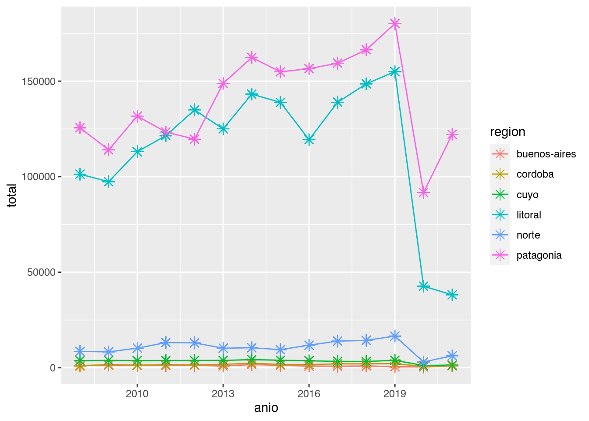
6.6 Transformaciones estadísticas
Hasta ahora visualizamos los datos tal cual vienen en la base de datos o transformados con ayuda de dplyr, pero hay ciertas transformaciones comunes que se pueden hacer usando ggplot2.
Para esta sección vamos a usar datos de la Encuesta de Viajes y Turismo de los Hogares (EVYTH).
Vamos a seleccionar sólo las columnas que identifican cada hogar y viaje, y el gasto del viaje y el quintil de ingreso del hogar.
Como cada fila es una persona y cada hogar puede tener más de una persona, el código de abajo usa distinct() para eliminar los valores repetidos.
gastos <- readr::read_csv("datos/evyth_2019_2021t1.csv") %>%
select(id_hogar, id_viajes, anio, trimestre,
region_destino, gasto = gasto_pc, quintil = quintil_pcf_visitante) %>%
distinct() %>%
mutate(region_destino = factor(region_destino))6.7 Gráficos de frecuencias
Este es un gráfico de barras construido usando la función geom_bar().
En el eje x muestra el quintil de cada hogar y en el eje y la cantidad (count en inglés) de hogares en ese quintil.
Habrás notado que el data frame gastos no tiene ninguna variable que se llame count y en ninguna parte del código se calcula esa cantidad explícitamente.
Esta variable es computada por geom_bar().
ggplot(gastos, aes(quintil)) +
geom_bar()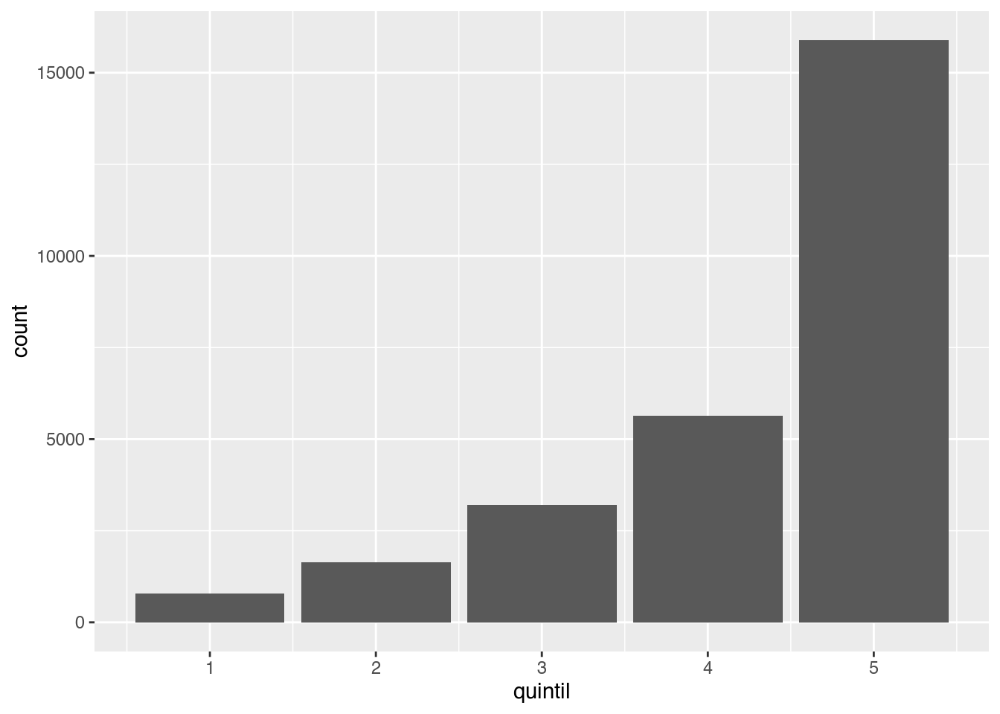
Tercer desafío
¿Qué otra variable, además de count computa geom_bar()?
Andá a la documentación de geom_bar() (apretando F1 sobre el nombre de la función o ejecutando ?geom_bar en la consola) y andá a la sección llamada “Computed variables” para verlo.
Además de contar la cantidad de elementos, geom_bar() computa la proporción sobre el total que representa grada grupo con la variable computada prop.
Para usar esa variable computada como la altura de las barras hay que usar la función stat() dentro del aes().
ggplot(gastos, aes(quintil)) +
geom_bar(aes(y = stat(prop)))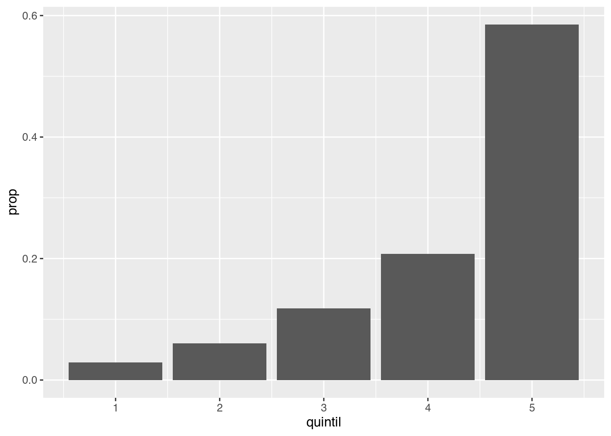
Ahora podés ver que casi el 60% de las familias encuestadas pertenecen al quintil 5.
Para obtener algo parecido pero para variables continuas hay que usar geom_histogram().
Un ejemplo de variable continua es el gasto asociado a cada viaje.
ggplot(gastos, aes(gasto)) +
geom_histogram() ## `stat_bin()` using `bins = 30`. Pick better value with `binwidth`.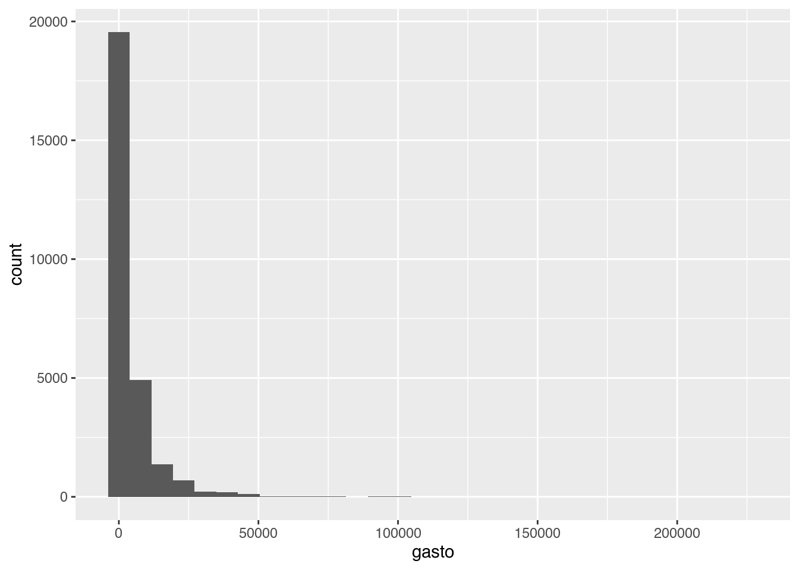
Algo que sucede muy seguido con medidas de gastos e ingresos, es que esta variable tiene una distribución altamente asimétrica. Es decir, hay muchos viajes con valores muy bajos y muy pocos con valores muy altos. Esto hace que se pierda detalle en el rango de valores donde se encuentra la mayoría de las observaciones. Una forma de resolver esto es transformando los valores con el logaritmo, pero graficar el logaritmo del gasto no sería muy fácil de interpretar. En vez de eso, es recomendable utilizar una transformación de escala en el gráfico.
Para transformar los valores del eje x con el logaritmo, se usa scale_x_log10().
Esto realiza la transformación pero luego muestra las etiquetas en la escala original.
ggplot(gastos, aes(gasto)) +
geom_histogram() +
scale_x_log10()## Warning: Transformation introduced infinite values in continuous x-axis## `stat_bin()` using `bins = 30`. Pick better value with `binwidth`.## Warning: Removed 853 rows containing non-finite values (stat_bin).Primer desafío
¿Notaste el mensaje que devuelve el gráfico?
`stat_bin() using bins = 30.
Pick better value with binwidth.`
Esta geometría tiene dos argumentos importantes bins y binwidth.
Cambiá el valor de alguno de los dos argumentos y volvé a generar el gráfico, ¿que rol juegan los argumentos?
También podés revisar la documentación.
6.7.1 Posición
Es posible que la distribución en quintiles de los visitantes no sea igual para cada región, entonces podrías querer dibujar una barra para cada quintil y cada región e identificar cada quintil con un color disitnto. Siguiendo lo anterior, quizás lo primero que se te ocurre es algo como esto:
ggplot(gastos) +
geom_bar(aes(quintil, color = region_destino))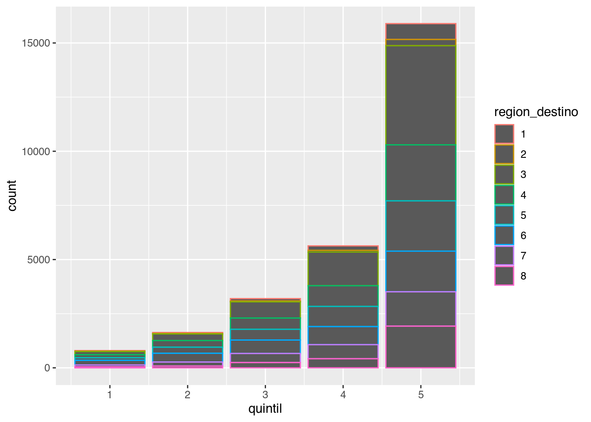
El problema de esto es que el parámetro “color” de las barras define el color del contorno, no el relleno.
Para modificar el relleno hay que cambiar el parámetro fill.
ggplot(gastos) +
geom_bar(aes(quintil, fill = region_destino))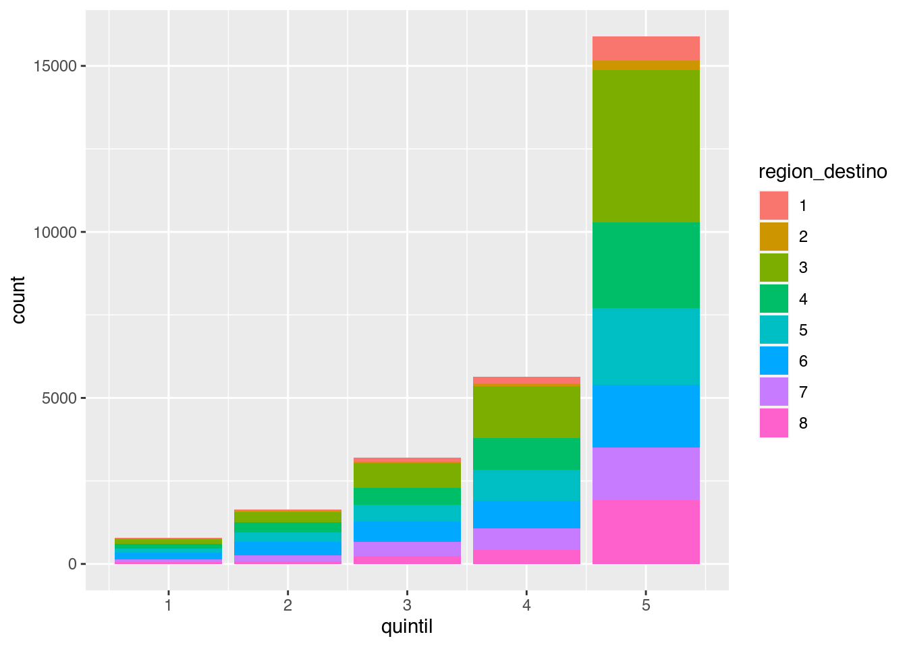
Al mapear una variable distinta, se puede visualizar información extra. En el gráfico, cada barra está compuesta de 8 barras apiladas cuya altura representa la cantidad de hogares que viajaron a cada región y están en cada cuantil. Este “apilamiento” de las barras es la opción de posición por defecto, pero puede cambiarse con el argumento “position”.
La posición por defecto es “stack”.
ggplot(gastos) +
geom_bar(aes(quintil, fill = region_destino), position = "stack")
position = "identity" colocará cada barra comenzando en cero quedando todas superpuestas.
Para ver esa superposición, debemos hacer que las barras sean ligeramente transparentes configurando el alpha a un valor pequeño.
ggplot(gastos) +
geom_bar(aes(quintil, fill = region_destino), alpha = 0.2, position = "identity")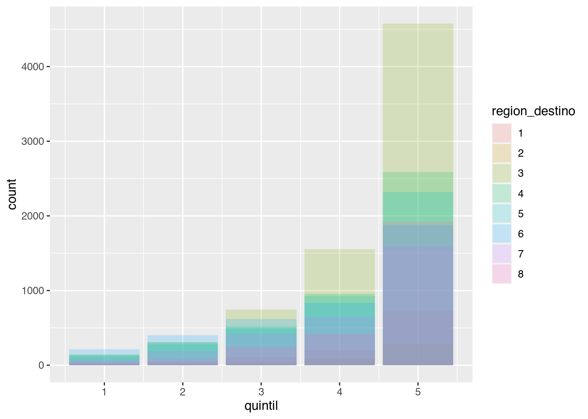
position = "fill" apila las barras al igual que position = "stack", pero transforma los datos para que cada conjunto de barras apiladas tenga la misma altura.
Esto hace que sea más fácil comparar proporciones entre grupos.
ggplot(gastos) +
geom_bar(aes(quintil, fill = region_destino), position = "fill")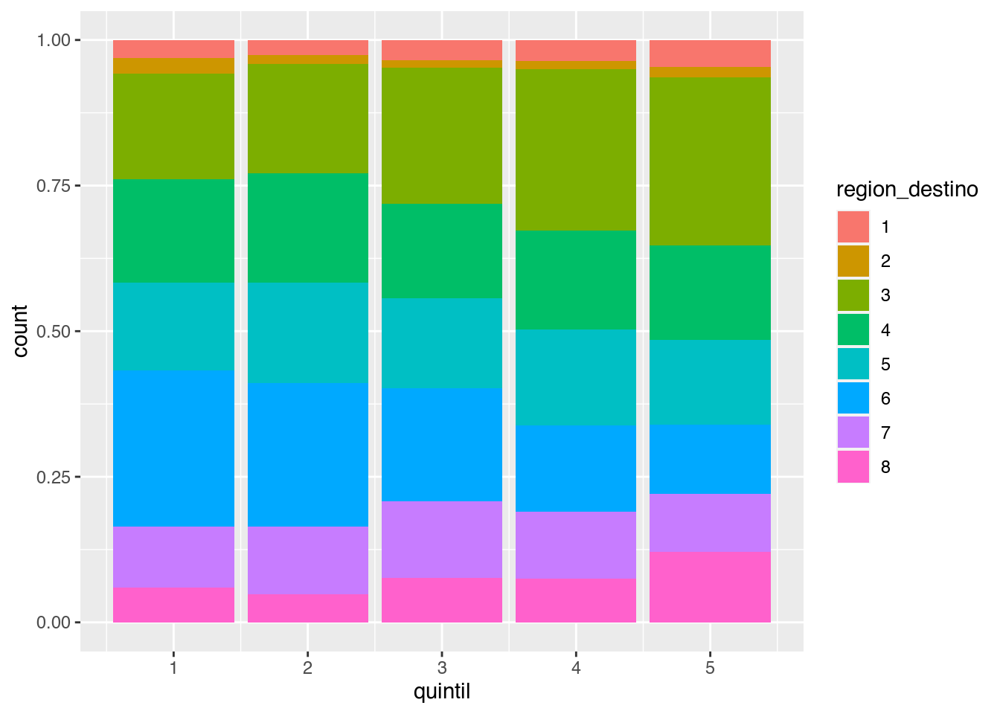
position = "dodge" coloca las barras una al lado de la otra.
Esto hace que sea más fácil comparar valores individuales.
ggplot(gastos) +
geom_bar(aes(quintil, fill = region_destino), position = "dodge")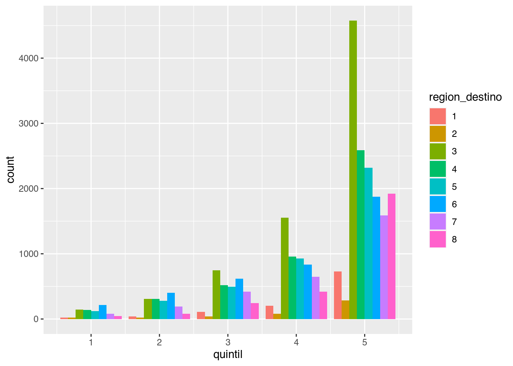
6.8 Gráficos de caja
Los diagramas de caja –mejor conocidos como boxplots– calculan un resumen de los valores centrales y de dispersión de la distribución de los datos.
ggplot(gastos, aes(region_destino, gasto)) +
geom_boxplot() +
scale_y_log10()## Warning: Transformation introduced infinite values in continuous y-axis## Warning: Removed 853 rows containing non-finite values (stat_boxplot).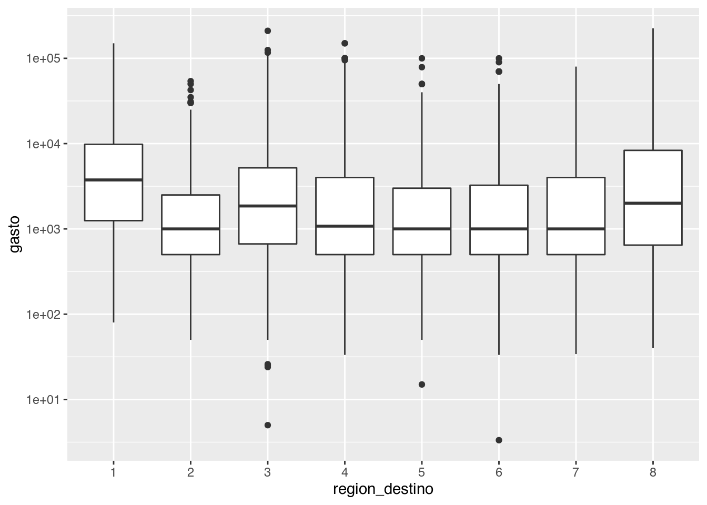
La línea central de la caja corresponde a la mediana (el valor que toma el dato central) y los extremos de la caja son los cuartiles 1 y 3, definiendo así el rango intercuartil (IQR). Los extremos están definidos como el valor observado que no esté más lejos de 1.5*IQR de la mediana y los puntos son las observaciones que se escapan de ese rango, que pueden ser considerados outliers o valores extremos.
Los boxplot brindan algo de información sobre la distribución de los datos pero al mismo tiempo esconden la forma de la distribución y el número de datos que se usaron para generarlos.
Por esta razón también existen geom_violin() y geom_jitter().
Segundo desafío
- Volvé a graficar la distribución del precio para cada tipo de claridad pero ahora usando
geom_violin()ygeom_jitter(). - ¿Qué ventajas y desventajas encuentran respecto de
geom_boxplot()?
ggplot(gastos, aes(region_destino, gasto)) +
geom_violin() +
scale_y_log10()## Warning: Transformation introduced infinite values in continuous y-axis## Warning: Removed 853 rows containing non-finite values (stat_ydensity).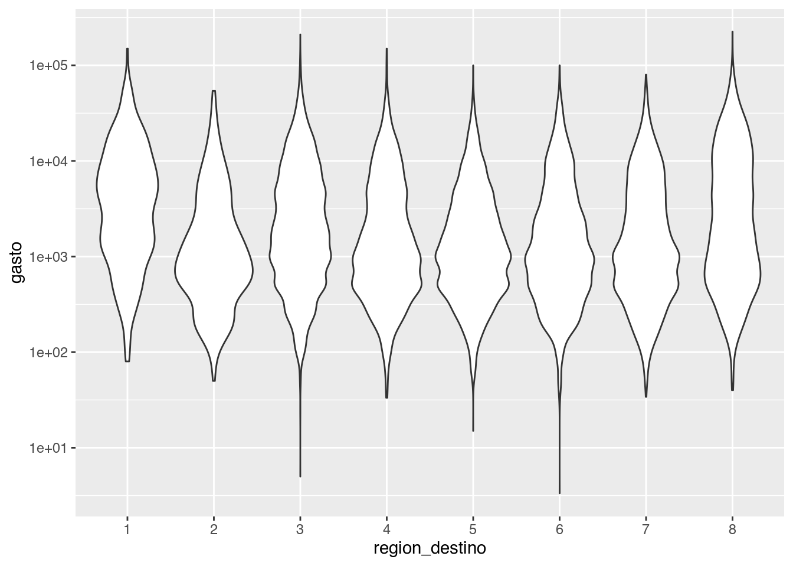
ggplot(gastos, aes(region_destino, gasto)) +
geom_jitter(alpha = 0.2, size = 0.1) +
scale_y_log10()## Warning: Transformation introduced infinite values in continuous y-axis## Warning: Removed 853 rows containing missing values (geom_point).
Cuando nuestra base de datos es muy grande corremos el riesgo de generar de que los elementos del gráfico estén tan juntos que se solapen y no se vean.
Esto se conoce como overplotting.
La tabla gastos tiene 27149 observaciones y al graficar un punto por cada una, aún si están separados por la región, quedan superpuestos.
Por esto es que en el último gráfico los puntos son muy chiquitos y con transparencia.
6.9 Graficando en múltiples paneles
En un gráfico anterior mostramos la cantidad de hogares en cada quintil en función de la región de destino mapeando la variable region_destino al relleno de las columnas:
ggplot(gastos) +
geom_bar(aes(quintil, y = stat(prop), fill = region_destino), position = "dodge")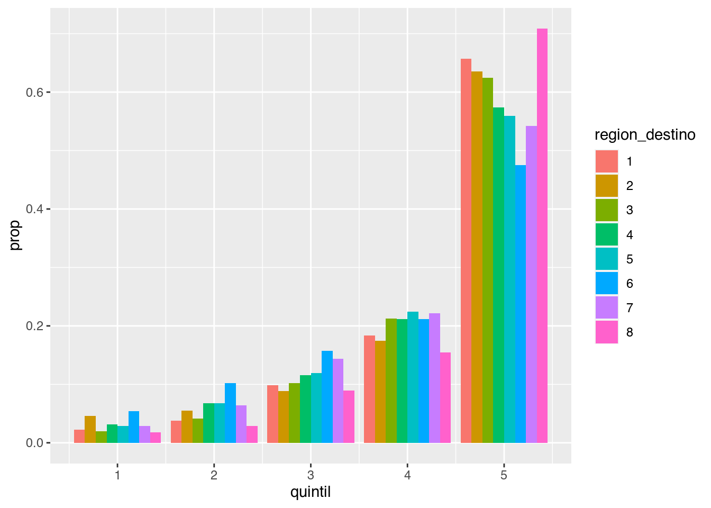
Este gráfico permite comparar diferencias entre regiones para un mismo quintil, pero no permite comparar muy bien la distribución de ingresos en función de la región de destino.
Este problema podría resolverse generando un gráfico por cada región filtrando las observaciones correspondientes.
gastos %>%
filter(region_destino == 1) %>%
ggplot() +
geom_bar(aes(quintil, y = stat(prop)), position = "dodge")
Pero sería muchísimo trabajo si tenés que hacer esto para cada una de las 8 regiones. Excepto que ggplot2 tiene una forma de automatizar eso utilizando paneles:
ggplot(gastos) +
geom_bar(aes(quintil, y = stat(prop)), position = "dodge") +
facet_wrap(~ region_destino)
Esta nueva capa con facet_wrap() divide al gráfico inicial en 8 paneles o facets, uno por cada región.
Esta función requiere saber que variable será la responsable de separar los paneles y para eso se usa la notación de fórmula de R: ~ region_destino.
Esto se lee como generar paneles en función de region_destino.
Una hipótesis razonable podría ser que la distribución de ingresos en cada región también varía según el trimestre. Para ver esto, habría que hacer el gráfico de barras para cada combinación de región de destino y trimestre. En ggplot2 esto se resuelve agregando más variables que definan los paneles “sumando” variables en la fórmula
ggplot(gastos) +
geom_bar(aes(quintil, y = stat(prop)), position = "dodge") +
facet_wrap(~ region_destino + trimestre)
Esto se lee como generar paneles *“en función de* region_destino y trimestre”.
Una alternativa que funciona mejor cuando se hacen paneles en función de dos o más variables es que en vez de organizar los paneles uno luego del otro, tengan una organización.
Por ejemplo, que los paneles se organicen en filas según la región de destino y en columna según el trimestre.
Para eso hay que reemplazar facet_wrap() por facet_grid() y cambiar la formula un poco.
ggplot(gastos) +
geom_bar(aes(quintil, y = stat(prop)), position = "dodge") +
facet_grid(region_destino ~ trimestre)
¿Ves como quedan los paneles más organizados y fácil es de leer? Esta organización permite comparar regiones para un trimestre en particular comparando gráficos en la vertical, y comparar trimestres para una misma región leyendo los gráficos en horizontal.
La formula region_destino ~ trimestre indica que region_destino define las filas y trimestre define las columnas.
Tercer desafío
Generá boxplots para analizar como se comporta el gasto de cada familia en función del quintil al que pertenecen para cada región.
## Warning: Transformation introduced infinite values in continuous y-axis## Warning: Continuous x aesthetic -- did you forget aes(group=...)?## Warning: Removed 853 rows containing non-finite values (stat_boxplot).
6.10 Gráficos de líneas suavizas
Antes viste este gráfico que parece mostrar que la cantidad de visitantes residentes estuvo aumentando entre 2008 y 2020 hasta que las restricciones por la pandemia hicieron que esta cantidad se desplomara.
parques %>%
group_by(trimestre = lubridate::month(indice_tiempo), region) %>%
mutate(residentes = residentes - mean(residentes)) %>%
ggplot(aes(indice_tiempo, residentes)) +
geom_line(aes(color= region)) 
Una forma de guiar al ojo a ver esta tendencia e ignorar las fluctuaciones trimestre a trimestre es usando una línea suave. Las líneas de suavizado ajustan un modelo a los datos y luego grafican las predicciones del modelo. Sin entrar en muchos detalles, se puede aplicar distintos modelos y la elección del mismo dependerá de los datos.
En ggplot2 se puede agregar una línea suave agregando una capa con geom_smooth().
parques %>%
filter(region == "patagonia") %>%
group_by(trimestre = lubridate::month(indice_tiempo), region) %>%
mutate(residentes = residentes - mean(residentes)) %>%
ggplot(aes(indice_tiempo, residentes)) +
geom_line(aes(color = region)) +
geom_smooth()## `geom_smooth()` using method = 'loess' and formula 'y ~ x'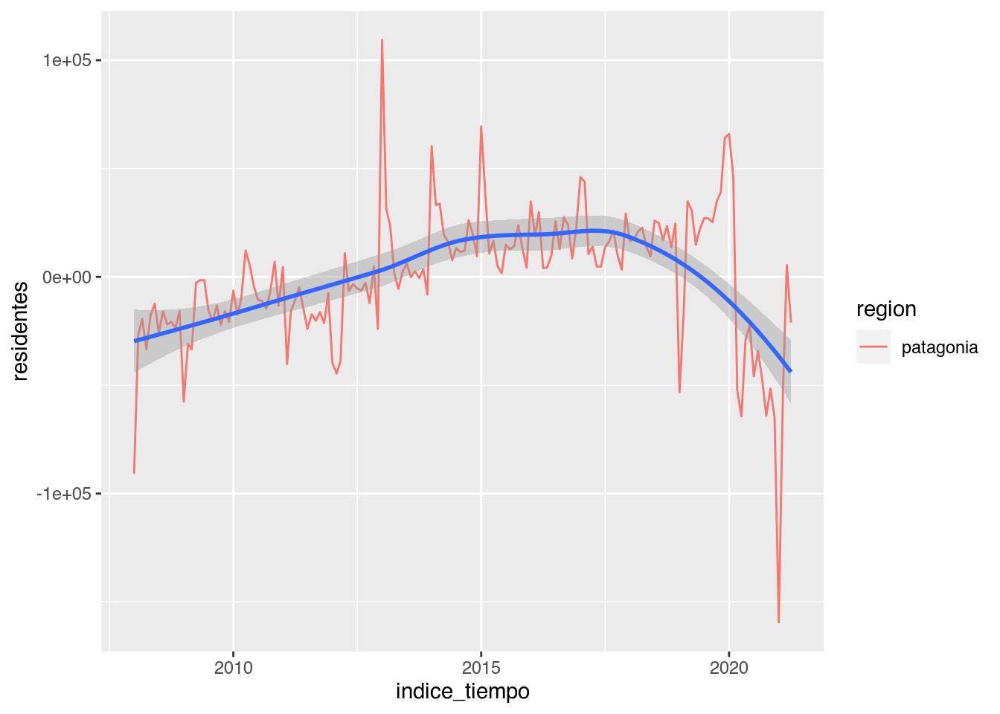
(Este gráfico además filtra sólo la región de Patagonia para que se vea más claramente.)
Como dice en el mensaje, por defecto geom_smooth() suaviza los datos usando el método loess (regresión lineal local).
Seguramente va a ser muy común que quieras ajustar una regresión lineal global.
En ese caso, hay que poner method = "lm":
parques %>%
filter(region == "patagonia") %>%
group_by(trimestre = lubridate::month(indice_tiempo), region) %>%
mutate(residentes = residentes - mean(residentes)) %>%
ggplot(aes(indice_tiempo, residentes)) +
geom_line(aes(color = region)) +
geom_smooth(method = "lm")## `geom_smooth()` using formula 'y ~ x'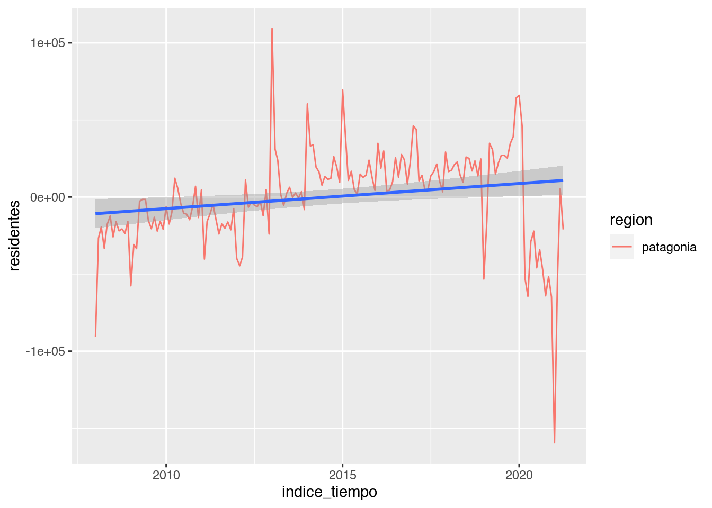
El área gris muestra el intervalo de confianza al rededor de este suavizado.
Cómo cualquier geom, podemos modificar el color, el grosor de la línea y casi cualquier cosa que se te ocurra.
parques %>%
group_by(trimestre = lubridate::month(indice_tiempo), region) %>%
mutate(residentes = residentes - mean(residentes)) %>%
ggplot(aes(indice_tiempo, residentes)) +
geom_line(aes(color = region)) +
geom_smooth(aes(color = region))## `geom_smooth()` using method = 'loess' and formula 'y ~ x'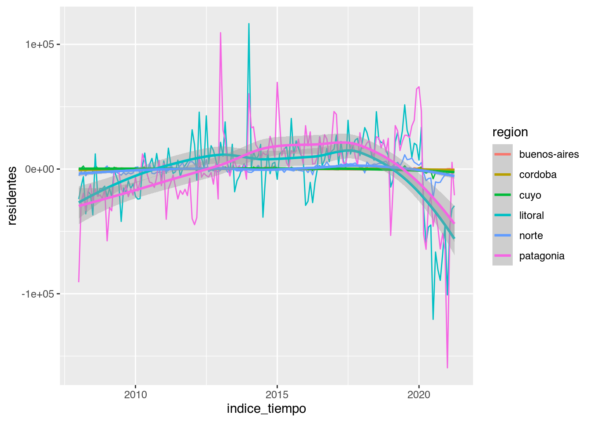